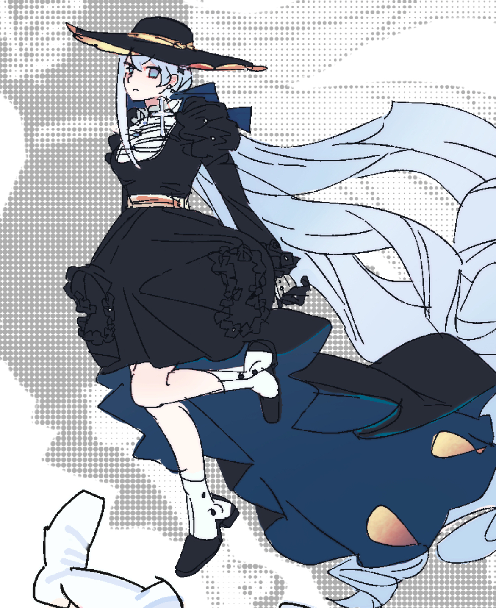
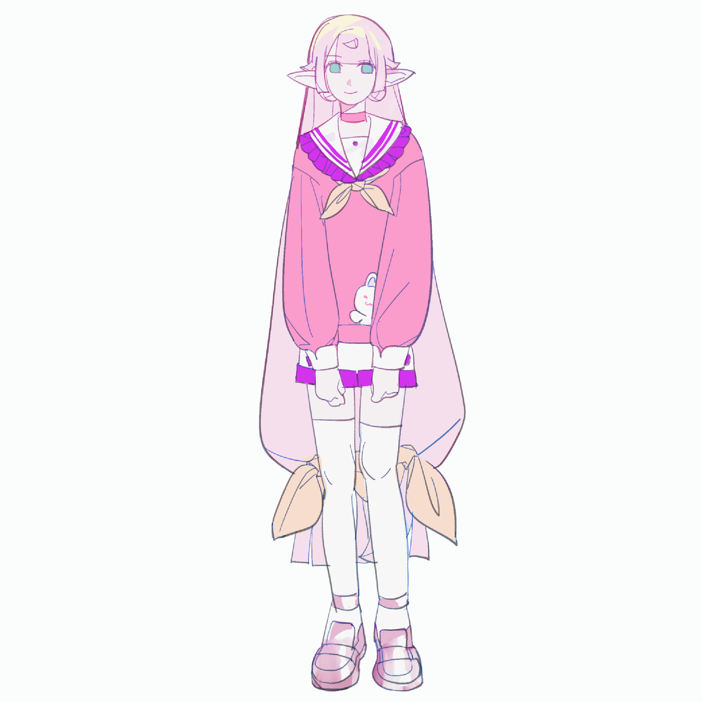

技术高度发达，
人与人、神经网络之间的边界已然消亡.....
却尚未消除伦理的争端
星野是杀手兔一族 的继承人之一，出生时有着聪明的大脑和良好的身体素质，自幼起接受精英教育，在他七岁左右时，青河政府的屠杀行动导致杀手兔一族几乎灭绝，留下了他一支独苗，被送入太阳马戏团 留观。
星野在人体实验上没什么价值，于是成为了实验所的泄欲工具，性征也朝可生育个体的方向发育，但由于期间可能经历了堕胎和不健康的生育，所以最后生殖系统坏死了。此时的他完全处于麻木的状态，濒临死亡之际滥用了试验药物（因此，他对于重生成为天使之前的记忆很为模糊，也十分依赖强烈的感官体验），之后被做成人体宴吃掉了一部分肢体。
在刚上天堂时，因为被吃掉的部分没有办法复原，负责重塑肉体的神使帮助他拼接了肢体（左大腿以下是拼接的。），同时星野选择了主动保留部分遗失的皮肉不复原，在双臂的挠骨、尺骨外缠特殊材料和绷带来令其维持肉体的形状，右小腿同理，使用长袖、袜子遮住。他的能力是收割灵魂：由于神使们、幸运儿们（以及一些其他……）的灵魂都是外置的，像伏地魔的魂器一般，所以只要星野能毁灭他们的魂器，就可以获得他们的能力。
这样的他虽然重生了，却难以理解实验室之外的事物伦理，因此星野在圣学院期间闹出过一系列的神人逸事，自那时起风评不好。同时修读高等教育和基础常识教育，在四年级年末的时候进入了圆桌会，开始接受特训，学得很快。圣学院时期认识（或者不认识）星野的大部分人评价他为一个沉默寡言的人形飞机杯（并且总是会补充这句话是星野自己说的，不可考），没有人知道他在想什么。从毕业起，星野就开始接手需要下到人间做的前线工作，具体为负责执行清算（及包揽了真正执行暗杀前的各类杂活）的“清道夫”一职，必要时他会采用各种手段。
自从下到人间任职的那刻起，星野就打算选址搭建一个永久的定居点。于是他在人间一处荒无人烟的老小镇郊外的大湖边用能力缓慢搭建了一个居所（独栋上下四层（大概）式小别墅），有巨大的玫瑰园和结界。在这一过程中认识了居住在湖心岛上的涟漪。同时他还一直运营着社交媒体的网黄寻找约炮对象，小有名气。
在人间生活稳定一段时间后，星野认识了来到这个世界的银魔女，（银魔女是世界线的旅行者，她就代表“旅行”即与世界之线相交的弦。），在不知道对方身份的情况下勾引她上床并且与其交往，对方受不了他滥交，留下一侧的十字架耳环不辞而别。这之后，星野觉更变本加厉地滥交了，同时仿佛工作是什么不需要生活维持事物一样地在生活如烂泥的同时也能良好地完成工作。然后他冲浪进入深水区，在深网耕耘猎奇玩法，在终于因为玩太大而奄奄一息时候被涟漪抗去了天堂修养，此后生活略有改观。由于期间一直维持18岁左右的外貌，为避免怀疑换过几次社交媒体账号。
米歇尔一直默默挂念着星野，感情很复杂。米歇尔通过人口数据的权限偷偷地监视星野，企图更多地了解星野，有时来中间（米歇尔去的比较多的是青河大陆）还想着能不能偶遇。
在某次任务和米歇尔相识（他单向认识米歇尔，米早已认识他），经历过一段时间的相处后两人交往、去世界边缘终末旅行，萌生感情。
由于神使还需要在人间做神职工作来领取俸禄，所以这是他当神职人员那一面的故事：
在下到人间时，星野被分配到的这处地域实际是一块旧的矿场， （至于为什么他家附近看不到矿场，那是因为矿场被水淹了，现在变成了他所在的湖……不过）在他来到此地的50年前，这里的矿场曾相当有规模，有很多职工及职工家属，甚至还有配套的设备和基础教育。不过因为开采完毕 （或者是不为人知的事故，没有人对这里如何结束了工程有印象，大家都觉得没有什么好说的），有一些职工离开了这地方，留下一些家属在住，这些人中大多是希望稳定、经历过繁荣并且受过一定教育的中老年人，所以他们中礼拜的人不多，教堂也很破，去礼拜的人大多数也只是和前任的神父聊天，把教堂当做冥想场所和社区活动中心。
上一任神父离开了这个地方（因为。。没有想好，决定模糊处理他是如何离开的），喝酸奶来到这里任职及继任神父的工作，顺便把自己在人间的血肉尸骨搬到了这里，在正式任职前就在教堂后面的墓地给自己挖了座坟墓。就如他的前线工作和生活是完全分开的那样，他的布教工作也是和生活完全分开的，甚至分开得更远一些，混乱大多发生在城郊（最额外的一点是家，但是家不是一个范围的圈子），而教堂的地域属于很远的西北地区。所以他也认真地在做神职工作，同时教堂这一片地区的人也没有人知道他的私生活。自从喝酸奶开始继任工作之后，他开始认真的诵经和做神职人员，并且由于他读气氛的能力比较弱，所以他一开始并没有意识到来这里的很多人意不在此。来教堂的人开始变少了。喝酸奶能感受到微妙的变化，不过他没有察觉到原因。
这个时期的他在深陷情绪泥潭时，除了性以外，还会通过吞咽自己血肉的方式（挖坟然后把自己腐烂的血肉给吃了）来冲刷情绪，由于他消化代谢不了，所以边吃边吐，下一次吃呕吐物边吃边吐，这些事情总是发生在没人的时候。但是也因此喝酸奶非常频繁地徘徊在墓园，不知怎的对墓园产生了归属感，心情好的生活会顺带帮自己的墓附近的墓扫扫墓。喝酸奶一直觉得邻居的墓 曾经一定很热闹，有些羡慕之余也会帮忙除草（他不会其他园艺只会挖杂草），有次除草的的途中被来扫墓的一人撞见了，扫墓的中年人把这件事传开之后，大家觉得喝酸奶虽然看起来有些循规蹈矩，但是实际上是一个善良的好人，所以下一周有很多人来到教堂，包括一些之前没来过教堂的人也来了。喝酸奶还是照常诵经，同时留下了和众人交流熟络的时间，一来二去和当地人混熟了，多年的定番之后已经和当地人熟络得不行了。在此期间他经历了从迷乱到没那么糜烂的一系列事情，开始留长头发，脸变得成熟，并且一直戴着银魔女跑路时留下的耳钉……；种种，但是每到礼拜日，他还是照常去教堂，照常给来的人诵经，只是诵经的时间越来越快，闲聊的时间比例变大了，中年人逐渐变为老年人，老年人逐渐表露出衰老的迹象。对于喝酸奶来说这些人给出的安心感取代了血肉。后来有人去世，他就会为他们刻墓碑和（在经过家属同意火化后后，偷偷地使用能力）火化、安葬，阻止葬礼也多数是他帮忙做的。
不过他们的时代葬礼大多数十分简略，就像平常的老友聚会一样聊天打牌。
除了一方面有人相信天堂再见以外，还有一部分原因是大家都活很长，没有什么太过于后悔的事情，乃至偶尔会互相开岁数玩笑。
打牌的同时他们还会调侃喝酸奶，说有神父帮我们举办葬礼好幸运，这个时代有一个自己的坟墓，或许在多年之后自己的灵魂还会因为刻在墓碑上的名字而存在吧，不像墓群 ，感觉自己的灵魂和骨灰罐一样进了冰冷的电脑集群中变成了冷冰冰的数字。打牌之后就是平常的回家睡觉，然后下周再来。
现在的礼拜日几乎没有新面孔会来，老面孔也逐渐地减少，比起谈话，更多听到的是有人去世或者有人为自己死后着想&要他帮忙刻墓碑主持葬礼的消息了。不过还是会有人来，所以他偶尔还是会去教堂，刻墓碑和选石材的技能精进了……他也放下了对于血肉的执念，不再扫自己的墓，自己的墓仍旧是一个粗糙的无名滑石板盖墓，周围没什么杂草。
有雕刻精致的大理石石碑，上方还按了一座花园拱门，之前经常有人打理，不过自从喝酸奶来到这里之后就没有人打理了，即使石碑仍旧亮得反光，且从远处看或许会觉得这座坟墓更为枝繁叶茂，但是藤的枝蔓已经覆盖了一层，把生卒日月和信息模糊了。
和老家属们， （按理来说这些人可以天堂见，不过喝酸奶从没有想过去见他们，或者，也从来没有让米歇尔帮自己查这些人到底是去了天堂还是下了地狱，生前做了什么，对自己说的话是否诚实）
銀魔女 
基本信息 名字 銀 发色 蓝色&银色 瞳色 天蓝色 原型 弦与墓葬 相关人士 关系者 星野涙人 可类比 世界之主
上原·托马斯 出生于西郊区一个中产阶级家庭，有着非常传统的性别观念——父母虽然爱她，却给她取了个男孩的名字，因为他们希望她能”取得像男人那样的成就“，和为了“保护 ”她，避免她因名字而遭受歧视。
托马斯身上有极少量的精灵血统，所以她莫名其妙因为返祖现象长着一对精灵耳， 但她的父母并不知道他们互相的家族有精灵血统。因此，托马斯出生后经历了不少小小的家庭矛盾。 不过 这些小冲突和上述观念都还是被隐藏在看似平静的生活表面之下的，所以她的家庭氛围其实总体上很幸福 ，不过敏锐的tms总是会因为偶尔的不理解和小矛盾而感到不安。
她患有一种叫做“芯片过度适应”的疾病， 这种疾病使她对网络信息过度敏感（连接她和神经网络的植入芯片是在她出生时植入的）。她能够轻松地穿梭于网络空间和虚拟世界，但随着年龄的增长，信息过载以及她对信息的理解方式的差异逐渐导致她与现实世界脱节。在初级学部时期 ，她有一些交往得非常好的朋友， 因为这段友谊几乎是她自我认知中唯一的稳定锚点，所以她非常珍惜友谊（ 以及和“外人”的情谊）。
16岁时，TMS 成为了“魔法少女”（她被天使化的自己诱骗，将灵魂存入魂器，最终没有俸禄饿死在了混乱大陆（一个时空混乱的地方），分裂，也就是说18岁的自己骗了16岁的自己），17 岁离家出走混乐队，18 岁在重蹈覆辙饿死和分裂的前夕被HSN所救，成为活死人，被捡回税务局，如今她已经在税务局生活了 6 年，每天的工作是帮 他查档（类似于人肉搜索，卧槽盒，但是数据是 HSN 用米歇尔的军方外挂薅的，tms 只要查个数据库就行了）和总结任务信息。偶尔会被抓去围观 HSN出任务，由于星野有时做任务手段比较极端，偶尔会被米要求去帮 HSN收尸（把半死不活的 hsn 搬回家里）。
现在，托马斯在经历了和 hsn 等人的夏日度假后，已经完全混入了 hsn 的茶友小团体。
TMS 最近正在陷入自我认知的困境。
上原_托马斯/Uehara_Thomas 
基本信息 本名 上原托马斯 昵称 TMS、爱与梦想 发色 浅金色/粉色 瞳色 蓝色/青绿色 人种 冻土苔原人种/精灵种 身高 165cm 年龄 22 岁 生日 6 月 15 日 相关人士 友人 友人 A、友人 B、米歇尔 领养者 星野涙人 乐队成员 zc1、gs1、jp1 异构体 电脑娘、Lily、nostalgia 家人 托马斯父、托马斯母
关于if线/轨道交通 青河
小白裙-上原托马斯
带有蝴蝶结的互联网形态
托马斯在ipv6的具体体现。她是极端的，疯癫的，举起手枪和锥子攻击图形符号，吞下子弹然后任凭血溅到沙发上；她也是带有束缚的禁欲殉道者，孜孜不倦地前往纯洁的圣地，不断地筑起自我的高台。
带有呆毛和长条耳坠的神经网络形态
托马斯在灭世（不是她灭的）后永远地活在了青河的神经网络之中。她只存在于一条坐标轴上：空间；她是神经网络的具象化，只能不断思考，不断延伸，不断生活，她是孤独的，孤独地永存在这场无休止的游戏里。昔日繁荣的中央大陆一片静寂，唯有仪器运作的滴滴声永存；消化者在土地与碳钢大楼上繁衍生息，当它们把那些高度发达的黑石碑和神经电路吞食干净的时候，托马斯也就不复存在了。
青河的政府应当是一个塔，坚固的、展开的巨物，人们望而却步。青河的政府由巨大的黑色方砖构成……
Hsn 的小团体：hsn 的邻居涟漪，hsn 的男友米歇尔，hsn 的茶友楽， 其实是米歇尔提议要让 hsn 多招待一下朋友，担心 hsn 太寂寞而形成的，每个人都很溺爱 hsn，虽然涟漪是一名毒妇（无意识地嘴恶，但是至少性格很飒爽，而且年龄很大）
Hsn的小团体：hsn的邻居涟漪，hsn的男友米歇尔，hsn的茶友楽，其实是米歇尔提议要让hsn多招待一下朋友，担心hsn太寂寞而形成的，每个人都很溺爱hsn，虽然涟漪是一名毒妇（无意识地嘴恶，但是至少性格很飒爽，而且年龄很大）
TMS最近正在陷入自我认知的困境。TMS16岁时成为“魔法少女”（她被天使化的自己诱骗，将灵魂存入魂器，最终没有俸禄饿死在混乱大陆，分裂，成为活死人也就是18岁时），17岁离家出走混乐队，18岁成为活死人被hsn捡回税务局，如今在税务局生活了3年，每天的工作是帮hsn查档（卧槽盒，但是数据是HSN用米歇尔的军方外挂薅的，tms只要查个数据库就行了）和总结任务信息。偶尔会被抓去围观hsn砍人，由于星野有时做任务手段比较极端，偶尔会被米要求去帮hsn收尸（把半死不活的hsn搬回家里）。
tms生活的时空中，税务局窗外的景象和当前的季节是对应的，或许会有些延迟，夏天和冬天总是更长，春天和秋天不怎么看到，可能森林本来就不会特别显著地体现春秋，尤其是这种针叶林，原始森林？
TMs不能出现在任何被主流摄像头观测到的时候，因此TMS在税务局的家里的网络是hsn搭的内网，虽然她的生活被局限于税务局的内网中，但偶尔会被米歇尔带去围观HSN执行任务、或是出门谨慎地玩耍。
tms曾经会自残（或许是从初级学部开始），被hsn发现后干预并且收走了所有尖锐物，家里所有有角的地方都磨圆了，并且hsn答应她，只要她不自残就可以答应她她的请求（甚至包括转移伤害到hsn身上）及会更多陪伴她，tms似乎一直期望有这种人出现，这也是为什么tms叫hsn为“妈妈”的直接原因，虽然HSN对托马斯的感情较为被动，但是他却对这种请求感到温暖。
tms理应把小时候种植的芯片取出（对生理系统的适配只能支撑200年），为了防止时空错乱等影响造成tms神经紊乱，hsn带TMS购买了靠无线电的网络而非生物网络工作的外设，并且要求TMS服用芯片稳定剂。
为了防止TMS感到无聊，hsn为TMS准备了许多冷储存的大型个人神经网络复制品（即被冷储存的复制品大脑）以在其中游玩，但是tms也因此时常感到和现实失去联系，因此她经常踏出家门（税务局的时间是混乱的，家里和家门外不是一个空间/时间，hsn使用存档的方式安置捡到的小朋友们，住过税务局的小朋友们被放在各个不同的时间点（而这些时间点都在当时尚不存在），因此不会被混沌大陆的时间混乱性影响，但是出来了就回不了家了，除非hsn来带回），在税务局的某个房间放下一张板凳坐着，或者干脆下楼到附近的丛林、空地里坐着。她发现其他时间的个体会变成空房间里重叠在空中的黑影，于是经常会想自己是不是也会成为了某个时间的黑影呢？
实际上托马斯最先有的排解无聊的聊天对象、护工是仿生人干冰。干冰是由hsn赠与tms的，可以帮助tms打扫，也可以帮助tms处理一切正常人的需求，但是tms觉得干冰没有意思，所以干冰的存在很微妙。关机时，干冰总是斜靠在客厅的玻璃桌边上。
hsn此时此刻似乎并没有把TMS当成家人的意识，但是今年居然意外地邀请TMS来和自己小团体一起夏日度假了。hsn对TMS的感情被动地不深，因为感情深的话告别的那天会很难过，相反，米歇尔很喜欢tms（因为tms意外地能接上他的电波），他也认为hsn把tms当成养女很萌、理解hsn的麻木，但是苦于说不出口，hsn难过时自己没有办法让hsn好起来的话自己也会很愧疚。
undefined
托马斯是一名人类女孩，名字像男名，是因为父母希望她如男孩一般，而当女孩需要承受许多偏见。同时，托马斯有精灵耳，这其实是返祖现象，但是父母都不知道自己家族谱系有精灵血统，因此tms遭受了许多家庭小矛盾。
托马斯成长于青河大陆的西郊区，父亲是一名商人兼艺术家，母亲则是一位职场女性。尽管家庭氛围整体幸福，但偶尔的误解与矛盾始终让她感到不安。她的“芯片过适应病”让她在网络空间中获得更强的真实感，使得她在虚拟世界中游刃有余，但却也使她逐渐与现实产生了隔阂，但是她有一些很真挚的好友，这令她有实感，所以她非常看重和朋友的友情。
现在的阶段是，托马斯在经历了和hsn等人的夏日度假后，已经完全混入了hsn的茶友小团体。
-Hsn的小团体：hsn的邻居涟漪，hsn的男友米歇尔，hsn的茶友楽，其实是米歇尔提议要让hsn多招待一下朋友，担心hsn太寂寞而形成的，每个人都很溺爱hsn，虽然涟漪是一名毒妇（无意识地嘴恶，但是至少性格很飒爽，而且年龄很大）
TMS最近正在陷入自我认知的困境。TMS16岁时成为“魔法少女”（她被天使化的自己诱骗，将灵魂存入魂器，最终没有俸禄饿死在混乱大陆，分裂，成为活死人也就是18岁时），17岁离家出走混乐队，18岁成为活死人被hsn捡回税务局，如今在税务局生活了3年，每天的工作是帮hsn查档（卧槽盒，但是数据是HSN用米歇尔的军方外挂薅的，tms只要查个数据库就行了）和总结任务信息。偶尔会被抓去围观hsn砍人，由于星野有时做任务手段比较极端，偶尔会被米要求去帮hsn收尸（把半死不活的hsn搬回家里）。
-tms生活的时空中，税务局窗外的景象和当前的季节是对应的，或许会有些延迟，夏天和冬天总是更长，春天和秋天不怎么看到，可能森林本来就不会特别显著地体现春秋，尤其是这种针叶林，原始森林？
-TMs不能出现在任何被主流摄像头观测到的时候，因此TMS在税务局的家里的网络是hsn搭的内网，虽然她的生活被局限于税务局的内网中，但偶尔会被米歇尔带去围观HSN执行任务、或是出门谨慎地玩耍。
-tms曾经会自残（或许是从初级中学部开始），被hsn发现后干预并且收走了所有尖锐物，家里所有有角的地方都磨圆了，并且hsn答应她，只要她不自残就可以答应她她的请求（甚至包括转移伤害到hsn身上）及会更多陪伴她，tms似乎一直期望有这种人出现，这也是为什么tms叫hsn为“妈妈”的直接原因，虽然HSN对托马斯的感情较为被动，但是他却对这种请求感到温暖。
-tms理应把小时候种植的芯片取出（对生理系统的适配只能支撑200年），为了防止时空错乱等影响造成tms神经紊乱，hsn带TMS购买了靠无线电的网络而非生物网络工作的外设，并且要求TMS服用芯片稳定剂。
-为了防止TMS感到无聊，hsn为TMS准备了许多冷储存的大型个人神经网络复制品（即被冷储存的复制品大脑）以在其中游玩，但是tms也因此时常感到和现实失去联系，因此她经常踏出家门（税务局的时间是混乱的，家里和家门外不是一个空间/时间，hsn使用存档的方式安置捡到的小朋友们，住过税务局的小朋友们被放在各个不同的时间点（而这些时间点都在当时尚不存在），因此不会被混沌大陆的时间混乱性影响，但是出来了就回不了家了，除非hsn来带回），在税务局的某个房间放下一张板凳坐着，或者干脆下楼到附近的丛林、空地里坐着。她发现其他时间的个体会变成空房间里重叠在空中的黑影，于是经常会想自己是不是也会成为了某个时间的黑影呢？
-实际上托马斯最先有的排解无聊的聊天对象、护工是仿生人干冰。干冰是由hsn赠与tms的，可以帮助tms打扫，也可以帮助tms处理一切正常人的需求，但是tms觉得干冰没有意思，所以干冰的存在很微妙。关机时，干冰总是斜靠在客厅的玻璃桌边上。
-hsn此时此刻似乎并没有把TMS当成家人的意识，但是今年居然意外地邀请TMS来和自己小团体一起夏日度假了。hsn对TMS的感情被动地不深，因为感情深的话告别的那天会很难过，相反，米歇尔很喜欢tms（因为tms意外地能接上他的电波），他也认为hsn把tms当成养女很萌、理解hsn的麻木，但是苦于说不出口，hsn难过时自己没有办法让hsn好起来的话自己也会很愧疚。
税务局的设定：
我想要补充这个庇护所的一些设定：首先你还记得我之前说的混沌大陆吗？
混沌大陆顾名思义，是指这个地方的时间和空间非常的混乱，人们可以在它的里边像玩RPG游戏存档一样存档，然后因为回档或者存档听起来就会对时间或者空间造成影响，所以，混沌大陆的很多地方经常出现世间的混乱人，只要一接近那里，可能就会因为那边的时空混乱而变得再也不存在于这个世界上了，或许是被神隐了，或许也只是单纯的被时间和空间影响而变成了“从未存在过的人物”。所以混沌大陆因为缺乏统一的管理和混乱的状态，是很多犯罪还有无组织行动的天堂。
如果从混沌大陆滋生出一波可以对抗青河的民间力量，清河政府就会放出一些仿生人去消灭混沌大陆的这个组织。当然，仿生人也是需要人类数据，需要学习人类的知识，他们有可能就会存在一些感情或者所谓的生命。政府不把仿生人的权利当做权利的这件事情或许存在很多的道德伦理问题，因此也会有民间组织因此对抗或者指责政府，但是这些并不重要。
在混沌大陆离世界边缘比较近的地方（也就是完全远离人烟、非常非常荒芜的地方）有着一大片原始森林，这里太过于原始，所以基本上没有什么人来，因此这里的时空混乱尚且处在可以控制的状态，有一些有能力能够到达这里的人就会把这里当做他们的隐居地或者庇护所。
托马斯在被天使化的自己哄骗成为魔法少女，最终得不到俸禄分裂地死在这片森林时，正好就倒在了奇迹税务局——星野的庇护所，的附近，同时星野也目睹了这一切。
随后，hsn出于好意把托马斯带回了自己的奇迹税务局休养。稅务局是一处位于森林深处的粗野主义建筑，从外表来看是一个有一定弧度的，从外面看上去废弃了很久的混凝土建筑，仍旧保留着步入式大堂大门的结构，但是门口的矮台阶已经沉降了，附近的玻璃也碎得不见踪影；并且如果再仔细从外面看的话，就会发现税务局一楼之上的结构基本上是纯粹的烂尾房毛坯房的样子。
不过正因为这里没有什么时空的混乱，星野把一个个的存档存在这里，还有一些自己的秘密物品。他可以带别人进入这个建筑里的某一个时空，这个时空里，建筑里边是会有合适居住、舒适的房间的，一般一段相同时空里这个建筑里，会有1到3个这样的房间，也就是说，建筑外面的景色和建筑里边的房间所在的时空是不一样的；星野把税务局的房间人员安排的如此分散是为了防止这些住着的人互相揭发发现的冲突，和更多的时空混乱。
而对于在里边的住着的这些人来说，就拿托马斯来说吧，她所住着的这段时空里边只有她一个人有房间，也就是说，托马斯每天可以从家门走出去，但是走出去之后，无论走到税务局的哪个角落，都会发现是一致的毛坯钢筋混凝土结构，并不会有什么其他的东西存在。有时远离家门后还会走不回去，最稳妥的方法就是一直在家里呆着，受到保护，或者是让星野带着人出门，并且让星野把人带回来，只有他清楚正确的时间是在哪里的。
因此，居住在庇护所里边的人的必备物品一般一般都是这样的获取方式：他们会自己留下给星野的信息，然后星野会帮他们买过来。（即使生物科学很发达，也不可能出现凭空打印食物这样的事情啊！也需要有原料才可以打印，所以这样子的食品有些人可以接受，但是更多人还是需要外面可以买到的方便食品，毕竟他们也对那些食物更为熟悉）
同时，因为这里毕竟还是混沌大陆、时空混乱的原因，如果在期间税务局里面呆的时间过于的长，又无所事事的话，很可能会变成虚无的人，身体就会开始出现变形，最终可能成为像媒体中所说的“伪人”一样的黑影生物，游荡在夜晚的税务局的各个角落，当然，这样的黑影不会对家门里的世界产生任何影响，也没有办法做出什么实际的行动，只是很吓人、令人焦虑而已。
在青河的人口状态是失踪，hsn帮助她改变了父母的记忆，使父母找不到她），所以她既不能在青河正常生活，又怀念城市的生活。
在托马斯看来，星野过着一种她不能理解的富人生活，虽然自己没有被抛弃（而是离家出走），却感觉仿佛被星野这样的富人收养了：托马斯不对此自卑，她只是感到很神奇，小时候家里矛盾经常是因为没钱而发生，但是家里并不穷（托马斯成长于青河大陆的西郊区，父亲是一名商人兼艺术家，母亲则是一位职场女性。）；她曾经经常暗自祈祷“我要努力工作成为承担得起自己爱好的人”，如今却以神奇的发生能随心所欲地拥有自己喜欢的东西。
内含：约稿/捏人/……本页面已对不同面相网骗高P等无端指责签署免责协议
 约稿：忘了画师名字
约稿：忘了画师名字  窗边的TMS（嘴里的是棒棒糖）
窗边的TMS（嘴里的是棒棒糖）  入冬前的TMS坐在发热窗台上
入冬前的TMS坐在发热窗台上 


 hsn泡水
hsn泡水  hsn漫步在忧郁的样板房下
hsn漫步在忧郁的样板房下